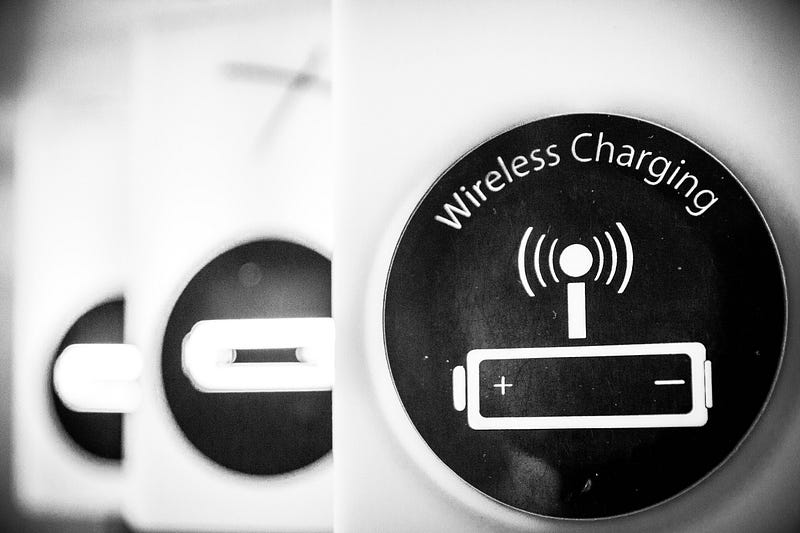
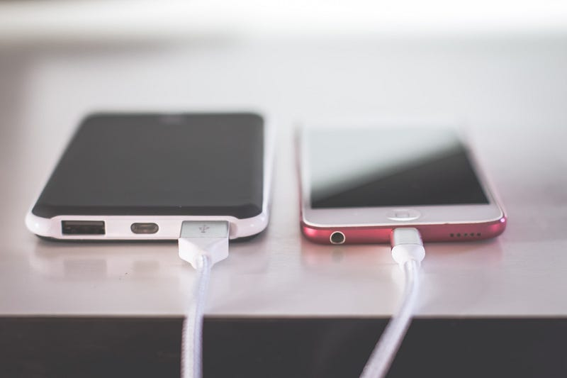

Wireless charging made it into a few tech publications recently because of its efficiency issues.
I had a read of some of these articles, listened to a podcast or two, and then it got me thinking? Will these efficiency issues be a disaster for wireless charging technology.
From my own personal experience with wireless charging, I have never really found it to be absolutely necessary. I have a wireless charger I bought when the Samsung Galaxy S7 Edge was released way back in 2016. Almost seems like a lifetime ago that that phone turned heads with its curved edged glass, beautiful design, gear VR integration, water protection, and at the time the top of the line Exynos chipset.
I used the wireless charging capability quite frequently to start with and was pretty impressed with how quickly it charged and the novelty of not having to plug in the charging cable to the bottom of the phone.
However, after a while, the novelty did wear off for me. I just never felt like I got a substantial benefit from it. I mean its no great hardship to just plug the cable into the phone and even then you can still use the phone whilst it's pulled in, whereas you can’t with a wireless charger unless you want to hold the charger together with the phone like some bulky tech sandwich.
Since then though I think that the wireless charging technology has improved as has its application. It has become more of a useful feature with the ability to reverse wireless charge other devices such as wireless earphones with your phone, even its integration into cars to charge whilst you drive is a very useful application.
The Concern
The talk recently has been around how inefficient wireless charging actually is, and how much more energy using this kind of charging methods over the traditional plugin method.
Why is this important:
Well the efficiency is important because it’s what determines how much power is wasted and how hot our batteries get.
Eric Ravenscraft noted in his recent article:
“In my tests, I found that wireless charging used, on average, around 47% more power than a cable.”
47% more power used than would have been used to fill up the same size battery if you had just used a cable is a lot. This means that your phone simply has to work harder when charging up and will generate significantly more heat which again is just wasted energy.
Ravenscraft goes on to gives us these figures:
“We worked out that at 100% efficiency from wall socket to battery, it would take about 73 coal power plants running for a day to charge the 3.5 billion smartphone batteries once fully,” iFixit technical writer Arthur Shi told OneZero. But if people place their phones wrong and reduce the efficiency of their charging, the number grows: “If the wireless charging efficiency was only 50%, you would need to double the [73] power plants in order to charge all the batteries.”
If everyone in the world switched to wireless charging, it would have a measurable impact on the global power grid.
This is rough math, of course. Measuring power consumption by the number of power plants devices require is a bit like measuring how many vehicles it takes to transport a couple dozen people. It could take a dozen two-seat convertibles, or one bus. Shi’s math assumed relatively small coal power plants outputting 50 MW, as many power plants in the United States are, but those same needs could also be met by a couple very large power plants outputting more than 2,000 MW (of which the United States has only 29).
The idea of 73 coal-powered power stations being needed to charge that amount of smartphones isn’t a pretty thought in a world dealing with climate change, but why is it then these figures have come about in relation to something seemingly as innocent as wireless charging.
Well, let us have a look and understand how wireless charging works and where issues come from.
How Wireless Charging Works

Wireless charging works by transferring energy from the charger to a receiver in the back of the phone via electromagnetic induction. The charger uses an induction coil to create an alternating electromagnetic field, in which the receiver coil in the phone converts back into electricity to be fed into the battery.
They typically have to be in close proximity to each other and correctly aligned over the top of each other, although a set orientation is normally not necessary. — Guardian
That last part of the explanation is very important. When you place a device onto a wireless charger you don’t have to have the coils aligned and because of this, this is where the inefficiency tends to grow. By not having the optimum set up each time to charge the device the poor alignment between the induction coil and the receiver in the device leads to wasted energy as more energy needs to be used to compensate for the in proper alignment in order for the charger to transfer the amount of energy it is capable of.
Should we be concerned?

Some individuals may be concerned by the efficiency issues but I think that for the majority of people are likely to not notice or not actually care at all.
Should the manufacturers be looking at making more energy-efficient products and products that have a greener footprint?
Well yes, they should be doing this and the likely hood is that more manufacturers are looking these kinds of efficiency gains but products that do have greater green potential tend to be more expensive than cheaper less efficient products and so reasonable gains in reducing inefficiency may not be seen for some time yet.
It is likely though those manufacturers will look at offsetting efficiency issues with gains in other areas such as recycling materials, using more energy-efficient production methods, reducing the use of plastic or what could be seen as unnecessary accessories in the packaging just like we have heard in the last few months from manufacturers considering not including charging bricks.
I would say then that if this is something that really does concern you and you would like to maybe save some change on your electric bill, you could look into investing in the most efficient wireless charger you can or you could just stick to plugging your phone into the charging cable if you don’t mind giving up the convenience factor of wireless charging.
The Future
There are a few companies though who are looking to go further with wireless charging.
Why settle for just a power pad plugged into the wall when you could be wireless charging over a distance without having to even place your device onto anything. How about wireless charging technology applied to EV’s or even ultrasound being used to transmit energy.
You should take a look at:
Newer: Why I started coding.
Older: Why I’m Excited For Neuralink and the potential for Symbiosis With AI
First published on Medium.